03 / AI + DESIGN / PERSONAL ARCHIVE
幻象之构
我把生成图像当作一间可反复进出的工作室：先让模型提出陌生的形态，再通过删减、裁切、重排与命名，把偶然变成自己的视觉语法。
12 WORKS / 4 DIRECTIONS2025—2026 / DIGITAL
01 / COLLECT
收集角色、植物、城市与游戏海报的视觉线索，让不同来源在同一张桌面上相遇。
02 / COMPOSE
用大色块、留白、线条和颗粒建立秩序；画面先成立，解释随后抵达。
03 / REWRITE
保留失败版本与不确定性，在人工筛选和二次编辑中确认最终的方向。
一组正在
成形的图像
这些作品横跨柔软的纤维质感、角色设定、极简海报与纸张拼贴。它们共享同一个问题：当机器提供了无限可能，人如何做出选择？
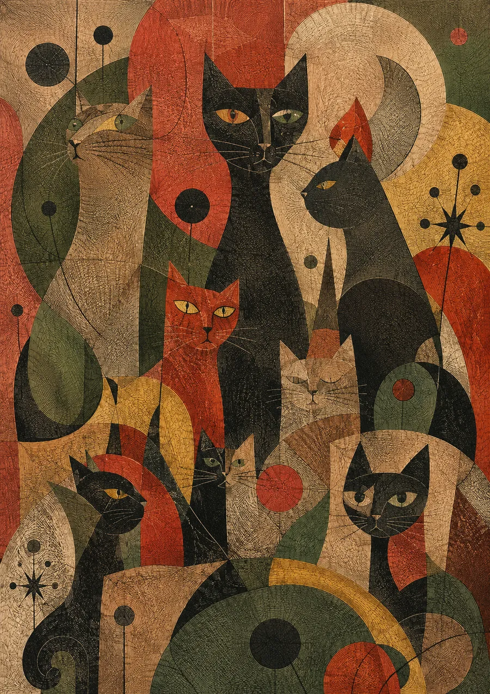
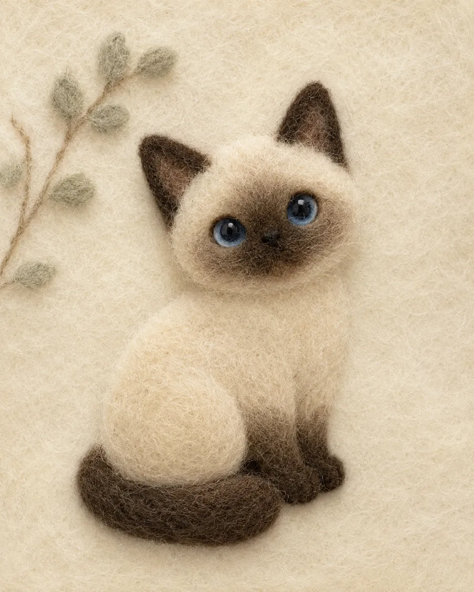
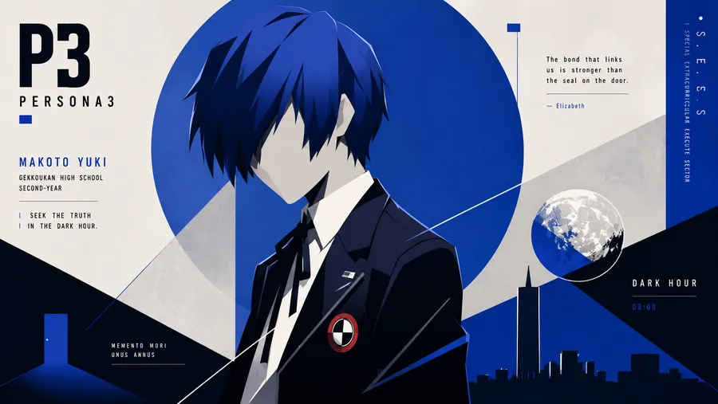
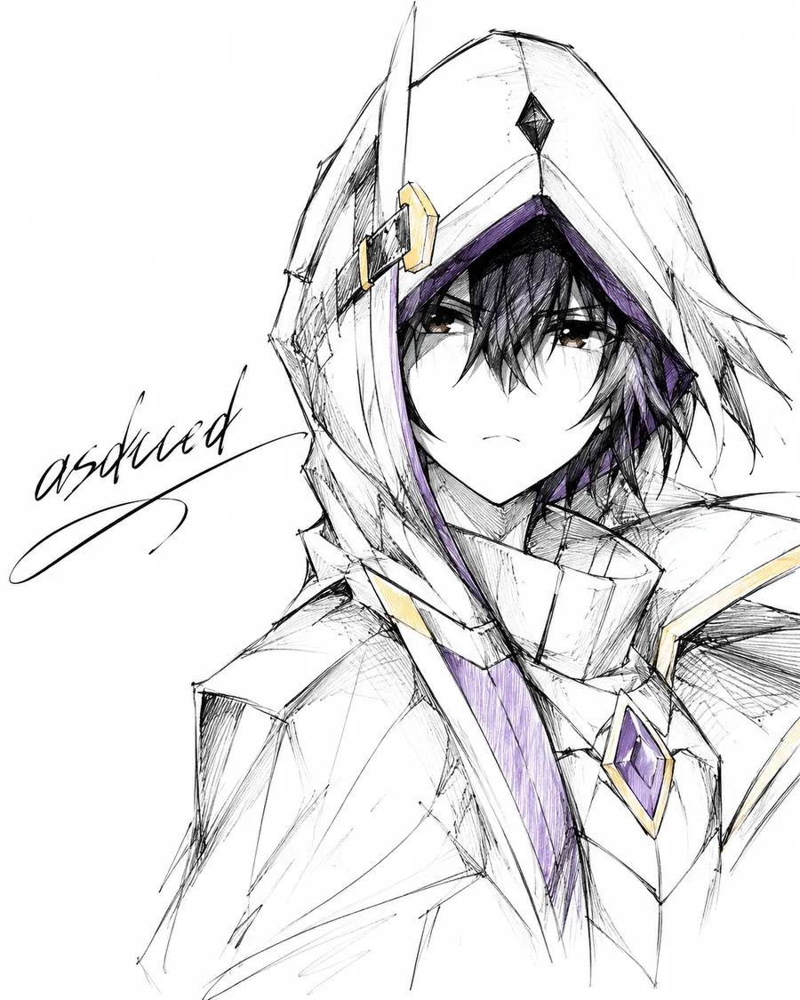
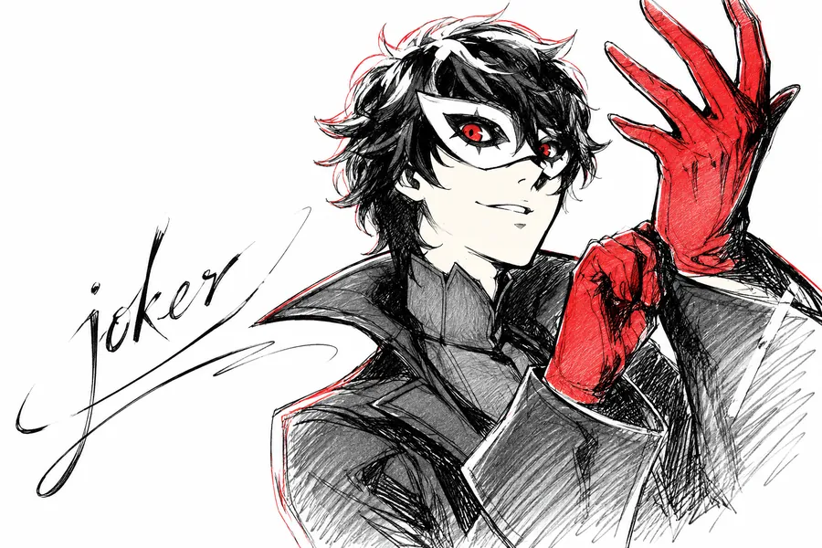
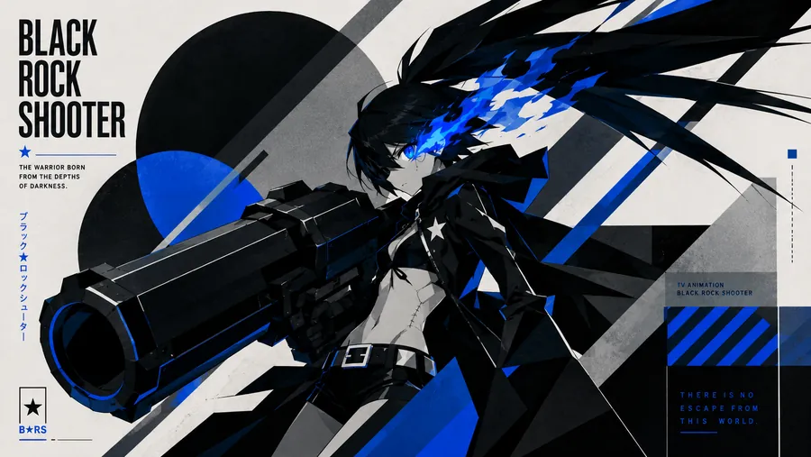
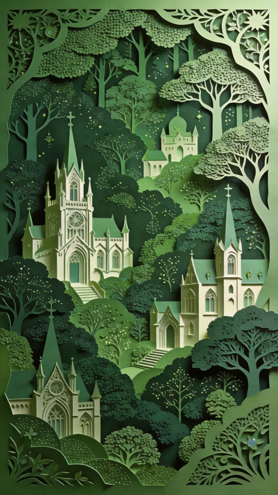
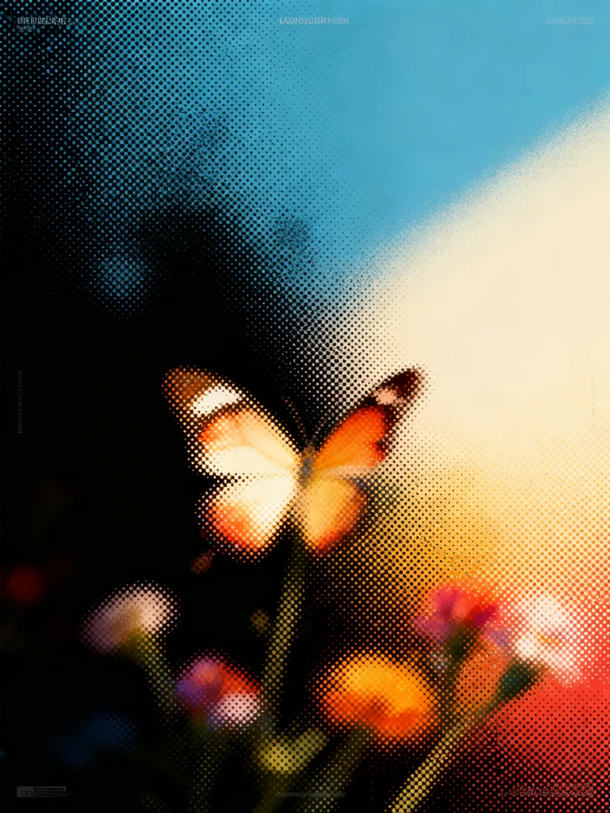
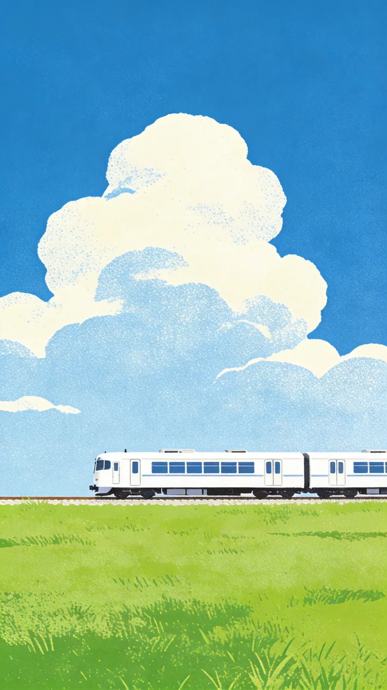
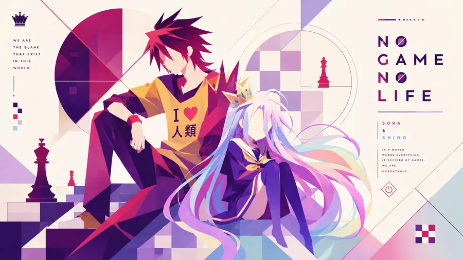
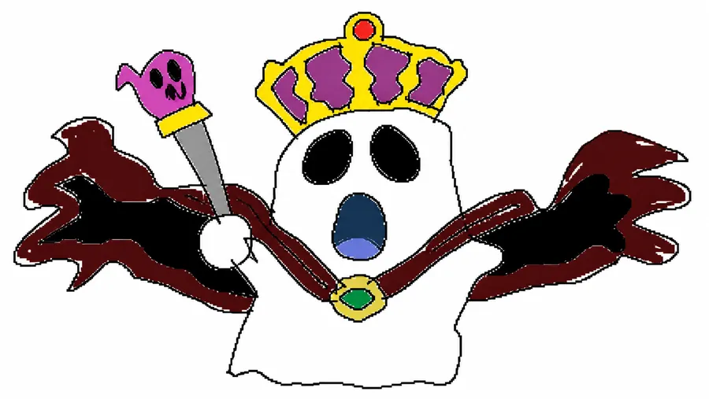
而是选择更准。
这页暂时作为个人创作档案的第一版。后续可以为每件作品补充提示词、模型、迭代截图、人工修改记录和发布尺寸，让“幻象之构”从作品墙继续长成一份可阅读的过程档案。